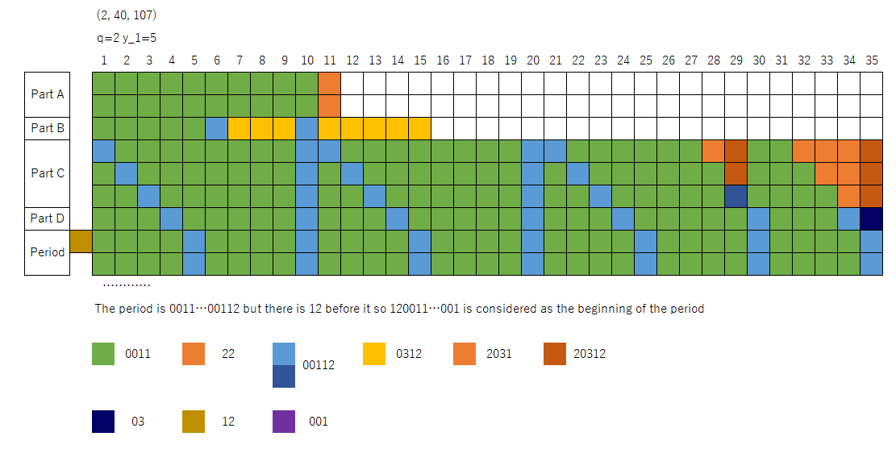
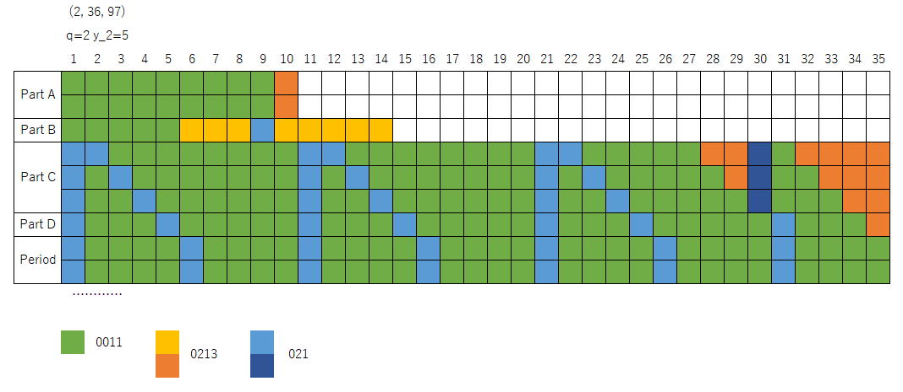

If x_1 is even
Overview
The pre-period consists of 4 parts. I call these part A to D and write the details below.
Part A
The easiest part.
It is ((0011)^{y_1*2}(22))^q.
Part B
If y_1=1, this part is 001100112203.
Else, it is (0011)^{y_1}(00112)(0312)^{y_1-2}(00112)(0312)^{y_1}.
Part C
If y_1≤2, this part does not exist.
This part is very complicated.
- First, make a grid of (y_1-2) rows, and (2*q+3)*y_1 columns.
- Fill all the cells with 0011. Some parts are updated later.
- For each row i, change the column i to 00112.
- Repeat this, from j in 1 to q:
- For each row i, change the column y_1*j*2 to 00112.
- For each row i, change the column y_1*j*2+i to 00112.
- For each row i,
- Let v=q*2*y_1+2*y_1-1.
- Change the columns v-((y_1-2)-i)+1 to v to 2031.
- Remark: If i=y_1-2, change nothing.
- Append 2 at the end of the column v.
- For each row i, change the columns (2*q+3)*y_1-((y_1-2)-i+1) to (2*q+3)*y_1 to 2031.
- For each row, change the last column to 20312.
Part D
If y_1=1, this part does not exist.
Else, it is ((0011)^{y_1-2}(00112)(0011)^{y_1}(00112))^{q+1}(0011)^{y_1-2}(0011203).
Visualization of the sequence

If x_1 is odd
Let y_2=y_1+1 because that makes more sense.
Example: b=12 then y_2=2, b=20 then y_2=3, etc.
Part A
Actually the same as the even case.
It is ((0011)^{y_1*2+1}(22))^q.
(Remember, y_1=x_1/2-1/2 because x_1 is odd.)
Part B
If y_2=2, this part is 00110011021002130213.
Else, it is (0011)^{y_2}(0213)^{y_2-2}(021)(0213)^{y_2}.
Part C
If y_2≤2, this part does not exist.
This part is very complicated.
- First, make a grid of (y_2-2) rows, and (2*q+3)*y_2 columns.
- Fill all the cells with 0011. Some parts are updated later.
- Repeat this, from j in 0 to q:
- For each row i, change the column y_2*j*2+1 to 021.
- For each row i, change the column y_2*j*2+1+i to 021.
- For each row i,
- Let v=q*2*y_2-1.
- Change the columns v-((y_2-2)-i)+1 to v to 0213.
- Remark: If i=y_1-2, change nothing.
- Change column v+1 to 021.
- For each row i, change the columns (2*q+3)*y_2-((y_2-2)-i+1) to (2*q+3)*y_2 to 0213.
Part D
Else, it is ((021)(0011)^{y_2-1}(021)(0011)^{y_2})^{q+1}(021)(0011)^{y_2-1}(0213).
Visualization of the sequence
